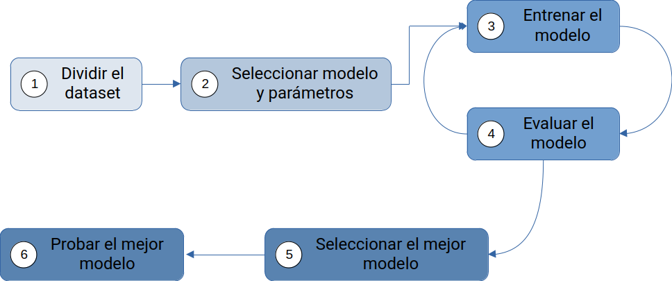
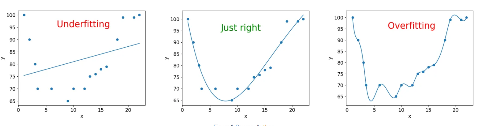
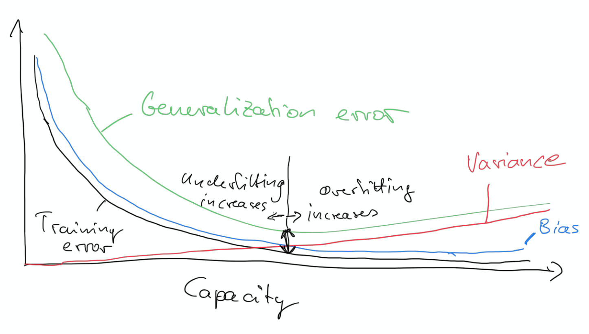
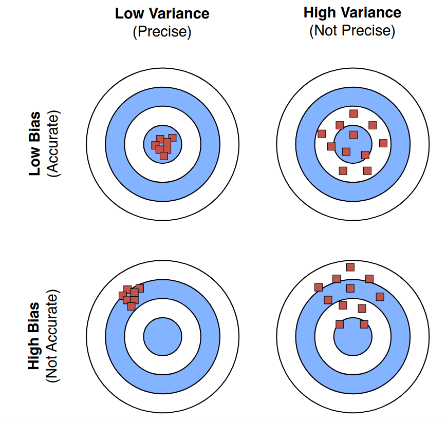

h2o.cv <- h2o.glm(
x = x,
y = y,
training_frame = ames.h2o,
nfolds = 10 # realiza 10-fold CV
)2 Aprendizaje máquina supervisado
Como hemos introducido en el tema anterior, el aprendizaje máquina supervisado es un proceso que implica entrenar a un algoritmo computacional para que resuelva un problema de predicción (regresión o clasificación), utilizando para ello un conjunto de datos. La Figura 2.1 muestra un esquema del proceso completo.

- Dividimos nuestro dataset en dos o más subconjuntos (como mínimo, training y testing).
- Seleccionamos uno o varios modelos/algoritmos y los parámetros de entrada (variables, inputs, features) que van a recibir.
- Entrenamos los modelos, teniendo cuidado de utilizar los datos de entrenamiento de forma óptima (veremos más sobre esto después).
- Evaluamos los modelos y comparamos su rendimiento. Repetimos los pasos 3 y 4 cuantas veces sea preciso para refinar el ajuste de los modelos y continuar las comparaciones, descartando las opciones que claramente no pueden ofrecer un buen rendimiento.
- Seleccionamos de entre los candidatos finales el modelo/algoritmo que muestra mejor rendimiento o que combina las mejores propiedades buscadas.
- Probamos el modelo sobre datos que nunca haya visto anteriormente, para evaluar de forma objetiva su capacidad de generalización.
2.1 Parámetros e hiperparámetros
Antes de profundizar un poco en todo este proceso, conviene puntualizar el significado de un par de términos que suelen provocar bastante confusión.
Durante el proceso de aprendizaje, el algoritmo o modelo escogido puede ajustar el valor de ciertos parámetros a partir de la información extraída de los datos. Pensemos, por ejemplo, en un modelo de regresión lineal. Dicho modelo, constará de una serie de parámetros (coeficientes), \(\{\beta_0, \beta_1, \beta_2, \dots, \beta_p\}\), cuyo valor podemos ajustar a partir de \(p\) variables de entrada proporcionadas al sistema, \(\{x_1, x_2, \dots, x_p\}\) para predecir el valor esperado de la variable de salida (respuesta), \(y\). En su caso más sencillo, la regresión lineal plantea la ecuación:
\[y = \beta_0 + \beta_1x_1+\beta_2x_2+\dots+\beta_px_p\]
Los valores de los parámetros (coeficientes) \(\beta_i\) se pueden calcular a partir de los datos de entrenamiento. En este caso tan sencillo, todos los parámetros del modelo son calculados a partir de los datos. Sin embargo, en otros casos, además de estos parámetros ajustables a partir de los datos hay que fijar los valores de uno o varios parámetros adicionales, que no pueden deducirse directamente de los datos. Estos son los denominados hiperparámetros, cuyo valor hay que fijar estimándolo de algún modo. Un ejemplo serían los modelos de regresión con regularización, un tipo de penalización que permite minimizar o directamente anular la intervención de las variables de entrada en el resultado de la predicción. Dos variantes comunes en este apartado son la regresión Ridge y Lasso, cuyo parámetro \(\alpha\) controla la “intensidad” del procedimiento de regularización aplicado.
2.2 El problema del sobreajuste
Observa la Figura 2.2, en la que se muestra un pequeño conjunto de datos representado en un diagrama de dispersión en 2-D. Sobre el diagrama de dispersión, tenemos dos posibles modelos candidatos, ajustados a estos datos:
- Un modelo lineal simple que, por ejemplo, podríamos haber obtenido mediante un ajuste por mínimos cuadrados.
- Un polinomio de grado \(n-1\) (donde \(n\) es el número de datos disponibles), que se ajusta perfectamente a todos los datos observados.

Como podemos apreciar, el modelo lineal simple comete cierto error en su ajuste, ya que algunos puntos quedan ligeramente por encima o por debajo de la recta de regresión propuesta. Sin embargo, el polinomio de grado \(n-1\) tiene error nulo, su ajuste es perfecto.
¿Qué modelo elegiríamos? Podríamos estar tentados de elegir el polinomio, al tener un error menor. Sin embargo, esta sería una elección poco acertada. No es muy creíble que, cualquiera que fuese el proceso que dio origen a estos datos, siga una evolución tan complicada como la marcada por las repetidas (y retorcidas) curvas de ese polinomio. La pregunta clave es no es cuánto error cometemos con los datos de entrenamiento sino cuánto error comete el modelo al tratar de predecir los datos de prueba, que no debe haber visto nunca antes.
Este problema, clave en el proceso de ajuste/entrenamiento de modelos supervisados, es lo que conocemos como sobreajuste (overfitting). Como norma general, que nunca debemos olvidar, al ajustar un modelo/algoritmo mediante datos tenemos que cuidar que no pierda su capacidad para generalizar, es decir, para predecir con poco margen de error nuevos datos a los que no se haya enfrentando antes.
En palabras de George E. P. Box, uno de los más geniales contribuyentes a la práctica estadística del siglo XX y comienzos del XXI, :
“Remember that all models are wrong; the practical question is how wrong do they have to be to not be useful.”

Este principio de generalización debe de completarse con otra prerrogativa, el llamado principio de parsimonia (también conocido como “navaja de Occam”). Este segundo principio nos dicta que debemos favorecer los modelos más sencillos frente a los más complicados, puesto que serán más fáciles de interpretar.
No obstante, conviene recordar las palabras de A. Einstein:
“Everything should be made as simple as possible, but not simpler.”
La traducción de esta advertencia, en términos de nuestro procedimiento para ajustar modelos de aprendizaje automático, es que también debemos evitar el subajuste (underfitting), provocado por un modelo que no ha sido entrenado convenientemente y todavía podría ofrecer menor error de entrenamiento sin incrementar el error de generalización.

2.3 El balance sesgo-varianza
El “punto de equilibrio” al que hacemos referencia en el apartado anterior está directamente relacionado con dos conceptos esenciales que midel el error cometido por los modelos entrenados en aprendizaje automático (Boehmke & Greenwell, 2019):
Sesgo (bias): es la diferencia entre el valor esperado (o promedio) que predice nuestro algoritmo y el valor correcto que estamos intentando predecir. Dicho de otro modo, mide cómo de lejos se quedan los valores predichos por nuestro modelo respecto de los valores reales.
Varianza (variance): es la “imprecisión” (error) que tienen las predicciones generadas por nuestro modelo para un valor de salida específico. Normalmente, un excesivo error en las predicciones para valores concretos de salida está relacionado con el sobreajuste, al haberse fijado el modelo demasiado en las fluctuaciones de los datos de entrenamiento, evitando así que generalice de forma más precisa para otros casos.
La Figura 2.5 muestra un esquema de los diferentes errores cometidos durante el proceso de aprendizaje, y dónde se encontraría un posible punto de compromiso, en la zona intermedia del gráfico, en el que se localiza un mínimo error de entrenamiento (para evitar subajuste), impidiendo que crezca de nuevo el error de generalización (lo que evita el sobreajuste).

La Figura 2.6 trata de ilustrar el tipo de error cometido en cada caso, comparando nuestras predicciones con lanzamientos sobre una diana (en rojo), asumiendo que la predicción correcta consiste en acertar en el centro de la diana.

Como resulta evidente en esta representación, la situación ideal sería la de un modelo que, simultáneamente, consiguiese predicciones con pocas fluctuaciones (varianza pequeña) y cercanas al valor real (mínimo sesgo). Sin embargo, en muchos casos reales no es posible conseguir ambos objetivos al mismo tiempo, y debemos optar por elegir la solución de compromiso que mejor refleje nuestros intereses.
2.4 Procedimiento de validación cruzada
En el contexto que hemos descrito, se sabe que sin un conocimiento previo sobre un problema concreto o el conjunto de datos que vamos a utilizar, es difícil asegurar a priori cuál será el mejor modelo o algoritmo de aprendizaje automático que lo resuelva. Esta limitación se conoce como el teorema no free lunch (Wolpert, 1996).
Puesto que debemos comparar los posibles modelos candidatos antes de utilizar los datos del conjunto de testing, una posible opción es utilizar los propios datos de entrenamiento para medir el rendimiento de cada modelo y compararlos entre sí. Sin embargo, este procedimiento no es adecuado porque, como ya sabemos, algunos modelos se pueden comportar muy bien con los datos de entrenamiento, pero generalizan mal con otros datos nuevos.
Otra opción es la de utilizar un método de validación, en el que parte del conjunto de datos de entrenamiento se utilicen para entrenar el modelo y otra parte, el conjunto de validación (holdout set) se guarde para validar el modelo, sin usar aún el conjunto de prueba final, que queda al margen de este proceso.
Sin embargo, usar un solo conjunto de validación puede dar como resultado malas estimaciones (se pueden consultar las referencias ofrecidas en apartado 2.4 de (Boehmke & Greenwell, 2019)). La mejor opción es usar un método de remuestreo (resampling). La idea es repetir el ajuste del modelo sobre distintas fracciones de los datos de entrenamiento y evaluar su rendimiento sobre otras partes. Los dos métodos más habituales que se aplican en estos casos son:
Validación cruzada con \(k\) conjuntos (k-fold cross validation).
Bootstrapping, basada en la conocida técnica bootstrap de remuestreo: una muestra aleatoria con reemplazo de los datos originales (Efron & Tibshirani, 1993).
Advertencia
Es importante saber que en algunos textos y referencias sobre métodos de validación, se denomina indistintamente a los sucesivos conjuntos de datos de validación dentro de grupo de datos de entrenamiento como “prueba”, “test”, “validación”, “evaluación”, etc. Esto genera gran confusión, puesto que es difícil distinguir cuándo se referieren a estos conjuntos y cuándo están hablando de los datos de evaluación finales, que permanecen al margen durante todo el proceso hasta que tenemos que evaluar el modelo final seleccionado.
En consecuencia, lo importante es tener claro el esquema mental del proceso que estamos siguiendo, para interpretar adecuadamente la denominación que utilicemos en cada referencia.
2.4.1 Validación cruzada con k conjuntos
La Figura 2.7 muestra en un esquema cómo se implementa este método de validación.

k conjuntos. Fuente: Sec. 2.4.1 de (Boehmke & Greenwell, 2019).
El conjunto global de datos de entrenamiento se divide en \(k\) trozos o subconjuntos.
En cada iteración, uno de los trozos se reserva para validar los modelos y los otros \(k-1\) trozos se usan para entrenar los modelos.
Por último, para cada modelo se combinan (calculando el promedio o de otras formas) las evaluaciones individuales en cada iteración para ofrecer un resultado de evaluación global, que se compara con el resto de modelos para seleccionar el más adecuado.
Lo más habitual es usar valores \(k=5\) o \(k=10\) (Boehmke & Greenwell, 2019). Cuanto mayor sea \(k\) menor será la diferencia entre el rendimiento real y nuestra estimación, pero también será mayor el coste computacional para completar el procedimiento.
2.4.1.1 k-fold cross validation con R
La mayoría de paquetes orientados al entrenamiento y evaluación de modelos de aprendizaje automático en R ya incluyen argumentos para indicar el tipo de validación cruzada que queremos realizar.
Por ejemplo, la función h2o::h2o.glm() para ajuste de modelos GLM (véase Sección 3.3), incluye el argumento de entrada nfolds para controlar cuántos grupos usaremos en el procedimiento de validación cruzada. Si nfolds = 0 no se aplica validación cruzada.
El paquete rsample contiene la función rsample::vfold_cv() que devuelve un data frame anidado. Cada elemento en splits es una lista que contiene el data frame de entrenamiento en esa iteración y los IDs de las observaciones que se usarán para entrenar vs. validar el modelo.
vfold_cv(ames, v = 10) # prepara 10-fold CV2.4.2 Boostrapping
La Figura 2.8 muestra un esquema de cómo se realiza el proceso de muestreo con reemplazo o bootstrapping.

En promedio, un 63,21% de las muestras originales son seleccionadas en cada muestra boostrap, mientras que las restantes que no han sido seleccionadas se marcan como out-of-bag (OOB). En este procedimiento, podemos entrenar un modelo con la muestra boostrap y validarlo con las muestras OOB. Por ejemplo este es el método empleado por Random Forests.
Este procedimiento tiende a reducir la varianza de la estimación, pero en conjuntos de datos no muy grandes (< 1.000 muestras) puede incrementar el sesgo de la estimación de rendimiento. En la mayoría de conjuntos de datos actuales, con tamaños relativamente grandes, esto no suele constituir un problema.
Muestras con bootstrapping en R
La función rsample::bootstraps() permite generar los conjuntos que necesitemos mediante bootstrapping.
bootstraps(ames, times = 10)2.4.3 Otros métodos de validación cruzada
Existen muchos otros métodos de validación cruzada que contemplan casos especiales o se aplican sobre datos con características particulares.
Validación cruzada anidada: Método alternativo de validación que permite estimar los hiperparámetros y comparar al mismo tiempo modelos introduciendo menor sesgo (cf. Sec. 4.14 (Raschka, 2020)).
LOOCV: es un caso extremo de validación cruzada con \(k\) conjuntos, en el que \(k=n\) (Kuhn & Johnson, 2013).
Validación cruzada para series temporales: se aplica cuando tenemos datos con depencias temporales estrictas. Puedes consultar la sec. 5.10 de (Hyndman & Athanasopoulos, 2021) para aprender más sobre esta técnica.
En el extenso artículo sobre evaluación de modelos de aprendizaje automático de S. Raschka (Raschka, 2020) se pueden consultar más propiedades y consejos prácticos sobre métodos de validación.